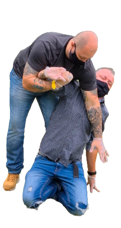
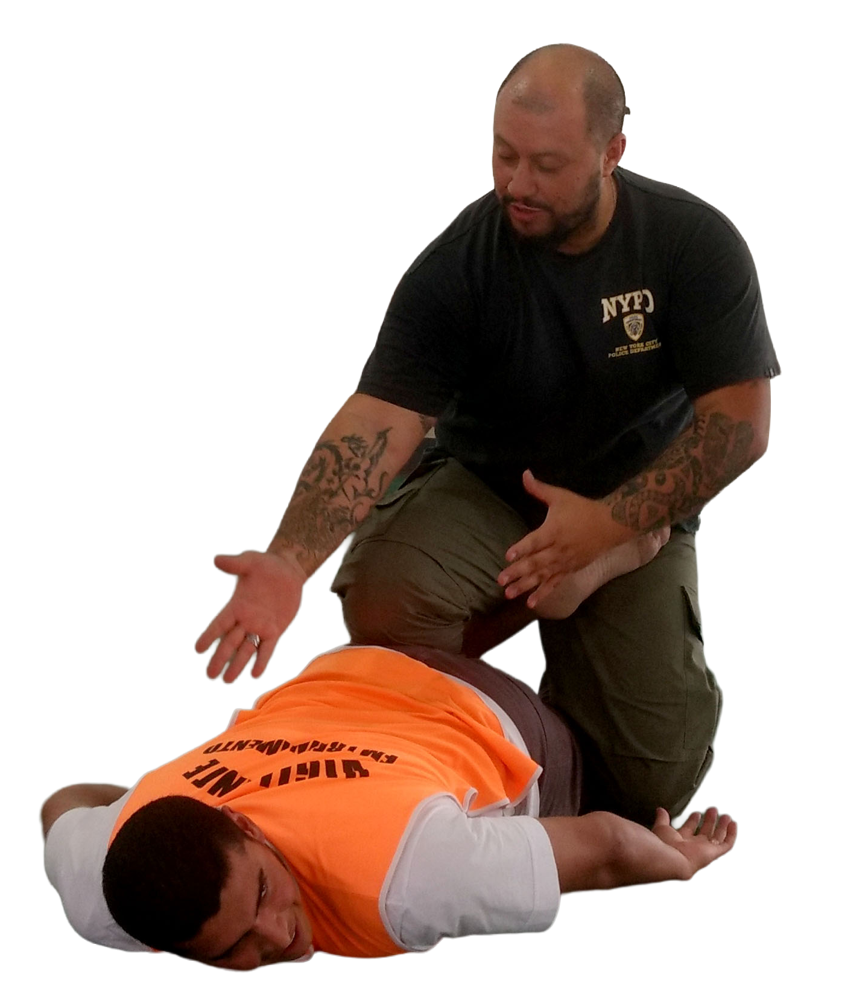
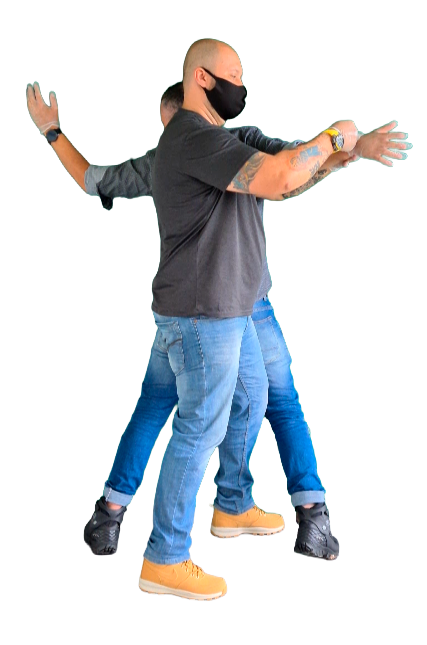

Tem gente que ensina segurança.
E tem gente que viveu a realidade antes
de subir
no palco.
Jackson Renato é Investigador de Polícia Civil do Paraná há 23 anos e instrutor licenciado pela Polícia Federal na área de Segurança Privada há 16 anos, com foco em Uso Progressivo da Força, táticas de abordagem e Gerenciamento de Crises.
Aqui o treinamento não é “show”. É procedimento, técnica aplicada e padrão operacional — do jeito que sempre funcionou: simples, direto e repetível.
Se a sua equipe
treina certo, trabalha mais segura.
Se não treina, trabalha na sorte. E sorte é cara.

Se você se encaixa em pelo menos um desses pontos, você está no lugar certo:

Treinamento bom deixa resultado visível. Não é motivação de 24 horas.
Com o Instrutor Jackson, sua equipe evolui em:
Aqui é simples: você aprende o que aumenta sua segurança, reduz erro e melhora o resultado — na rua, no posto e no relatório.
Treinamento não serve pra “parecer bom”. Serve pra equipe voltar pra casa inteira e a operação ficar blindada.
Muita gente ensina técnica isolada. O Método Jackson ensina sequência.
Você não aprende “truque”. Você aprende processo.
Isso vira cultura. E cultura é o que segura a operação quando o estresse sobe.

Três motivos clássicos:
Rotina vira piloto automático.
Falta de padrão: cada um faz de um jeito.
Relato fraco: aconteceu, mas não ficou bem registrado.
Resultado: risco cresce, incidente aparece, e todo mundo corre atrás do prejuízo.
Treinamento
é prevenção.
O barato sempre sai caro — e em segurança, às vezes o preço não é em dinheiro.
Treinamentos sob medida, conforme a sua realidade:
Os conteúdos são ajustados conforme: tipo de posto, público, risco local, escala, rotina e histórico de ocorrências.
Simples e eficiente
Se você quer uma equipe que funciona no mundo real, fale comigo.
Falar com Instrutor